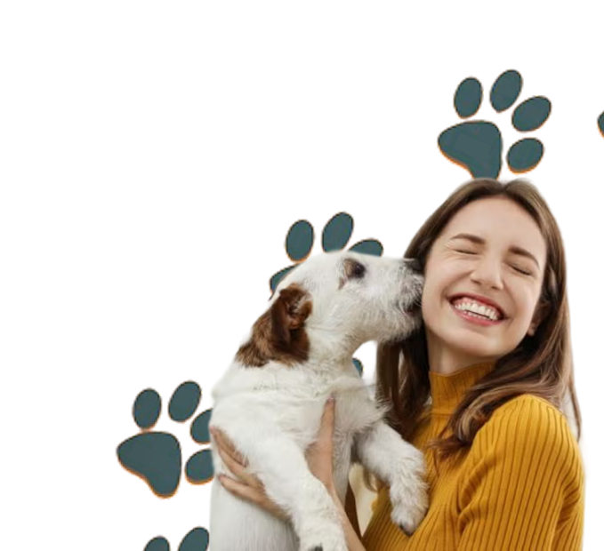

Juninho

Raça: Shih Tzu
Cor: caramelo
Visto por último em: Guarulhos - SP
Em todo o Brasil a procura e resgate dos nossos companheiros peludos


Desde 2018 ajudando tutores a encontrarem seus pequenos companheiros, o MapaPet tem como objetivo encontrar animais perdidos e abandonados e proporcionar a eles um lar digno.
Por meio de publicações e divulgações da nossa instituição e comunidade podemos fazer a diferença a esses animais. Mais do que uma ONG, somos uma família em busca de transformar vidas com nosso trabalho impulsionado por cada usuário.

Raça: Shih Tzu
Cor: caramelo
Visto por último em: Guarulhos - SP


Raça: maltês
Cor: preto e branco
Visto por último em: próximo ao parque Ibirapuera

Raça: Persa Himalaio
Cor: branca
Visto por último em: Mercado Central - BH

Raça: Vira-lata
Cor: caramelo
Visto por último em: Itaquera - SP

Raça: Vira-lata
Cor: preto e branco
Visto por último em: Belo Horizonte - MG

Raça: Vira-lata
Cor: preta
Visto por último em: Parque Ibirapuera

Raça: Border Collie
Cor: branca e marrom
Visto por último em: São Paulo - SP

Raça: Vira-lata
Cor: tigrado
Visto por último em: Fortaleza - CE

Raça: Vira-lata
Cor: cinza e branco
Visto por último em: Guarulhos - SP

Raça: Vira-lata
Cor: tricolor
Visto por último em: Alter do Chão - PA

Raça: Indefinida
Cor: preto e branco
Visto por último em: Bonito - MS
.png)
Raça: Vira-lata
Cor: caramelo
Visto por último em: Jericoacoara - CE

Raça: Indefinida
Cor: branca
Visto por último em: Chapada Diamantina - BA
 +5M
+5M
Tutores conectados
 +8.500
+8.500
Pets encontrados
 92%
92%
recuperação nas primeiras 72 horas
Notificações em um raio de 30 km.
Ampliação da busca para 100 km após 25 horas.
Mais de 8.000 famílias ajudadas.

Maria ★★★★★
São Paulo - SP
Só tenho a agradecer! Um milhão de obrigados!!
Reencontrado
Samantha ★★★★★
Belo Horizonte - MG
Mia foi encontrada à 10 km de casa e muito bem cuidada!! Sou muito grata ao MapaPet e a todos que ajudaram esse reencontro se tornar realidade!
Reencontrado
Mario ★★★★★
Belo Horizonte - MG
Gratidão!! Fiz até uma doação ao site para ajudar outras pessoas a reencontrarem seus amores de quatro patas assim como reencontrei o Thorzinho!!
ReencontradoEncontrou um animal sofrendo maus-tratos?
VOCÊ PODE SALVAR VIDAS.
Animais maltratados merecem justiça, e quem os maltrata merece a prisão.
Ligue para o Disque-Denúncia (181).
As denúncias serão 100% anônimas.
Lei de Crimes Ambientais (Lei nº 9.605/1998)


.png)